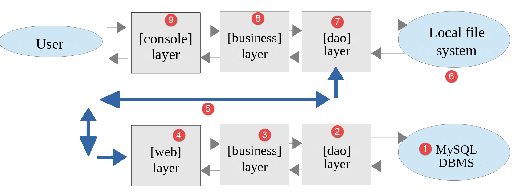

18. Praktische Übung – Version 8
Wir greifen die Beispielanwendung – Version 5 (und ihre durch die JSON-Datei konfigurierte Version 7) – wieder auf und machen daraus eine Client-Server-Anwendung. So können wir das, was wir im vorherigen Kapitel über Webdienste gelernt haben, in die Praxis umsetzen.
18.1. Einführung
Die Architektur von Version 5 sah wie folgt aus:

- Die Schicht namens [dao] (Data Access Objects) verwaltet die Interaktionen mit der MySQL-Datenbank und dem lokalen Dateisystem;
- die Schicht namens [business] führt die Steuerberechnung durch;
- Das Hauptskript fungiert als Orchestrator: Es instanziiert die Schichten [dao] und [business] und kommuniziert dann mit der Schicht [business] , um die erforderlichen Aufgaben auszuführen.
Wir werden diese Architektur auf die folgende Client-Server-Architektur migrieren:

- In [2] verwenden wir die Schicht [dao] von Version 5 wieder und entfernen die Methoden, die auf das lokale Dateisystem zugreifen. Diese Methoden werden in die Schicht [dao] des Clients [6, 7] migriert;
- in [3] bleibt die Schicht [business] dieselbe wie in Version 5, abzüglich ihrer Methode [executeBatchTaxes], die in die Schichten [business] und [8] des Clients migriert wird;
- In [4] muss das Serverskript geschrieben werden; es muss Folgendes leisten:
- die Schichten [business], [dao] und [3, 2] erzeugen;
- mit dem Client-Skript [5, 7] kommunizieren;
- In [7] muss die Client-Schicht [dao] geschrieben werden:
- sie ist ein HTTP-Client des Serverskripts [4, 5];
- sie übernimmt die Methoden für den Zugriff auf das lokale Dateisystem aus der Schicht [dao] von Version 5;
- In [8] stellt die Schicht [business] des Clients dieselben Methoden bereit wie die Schnittstelle [InterfaceBusiness] aus Version 5. Ihre Implementierung ist jedoch eine andere. In Version 5 führte die Schicht [business] die Steuerberechnung durch. Hier führt die Schicht [business] des Servers diese Berechnung durch. Die clientseitige Schicht [business] greift daher auf die Schichten [dao] und [7] zurück, um mit dem Server zu kommunizieren und ihn aufzufordern, die Steuer zu berechnen;
- In [9] muss das Konsolenskript die Client-Schichten [dao, business] instanziieren und deren Ausführung starten.
Der Server ist ein Webskript: Es befindet sich im Ordner [scripts-web/tax/version-08] und wird vom Apache-Server in [Laragon] ausgeführt. Der Client ist ein Konsolenskript: Es befindet sich im Ordner [scripts-console/tax/version-08] und wird in einem Terminal ausgeführt.
18.2. Der Server
Wir konzentrieren uns auf die Serverseite der Anwendung.

Diese Architektur wird durch die folgenden Dateien umgesetzt:
18.2.1. Zwischen den Schichten ausgetauschte Entitäten
Die zwischen den Schichten ausgetauschten Entitäten sind die aus Version 5: die Exception [TaxException], die Daten der Steuerverwaltung [TaxAdminData], und die Beschreibung der Datenbank [Database]. Der Server verwendet außerdem die Klasse [Utilities] aus Version 5, deren Methode [readJsonFile] von der Klasse [Database] verwendet wird. Im PHP-7-Kurs wurden diese Dateien in den Serverordner kopiert. Wir laden sie nun direkt aus dem Ordner [scripts-console/tax/version-05]: So existiert jede Klasse nur als eine einzige Instanz, und jede in Version 5 vorgenommene Korrektur kommt allen Versionen zugute, die sie verwenden.
18.2.2. Die [dao]-Schicht
Die Schicht [dao] implementiert die folgende Schnittstelle [InterfaceServerDao]:
- Zeile 13: Die Methode [getTaxAdminData] ruft Daten aus der Datenbank der Steuerbehörde ab.
Die Schnittstelle [InterfaceServerDao] wird von der folgenden Klasse [ServerDao] implementiert:
Dies ist der Code der Klasse [DaoTaxWithTaxAdminDataInDatabase] aus Version 5, die in Kapitel 13 vorgestellt wurde, ohne das Trait [TraitDao], das die Methoden zum Lesen und Schreiben der JSON-Dateien der Steuerzahler bereitstellte. Die folgenden privaten Methoden [getBrackets] und [getConstants] , die hier nicht wiedergegeben sind, bleiben unverändert. Es gibt nur einen Unterschied:
- Zeile 17: Das Attribut [taxAdminData] wird als [protected] statt als [private] deklariert. Version 9 leitet die Klasse [ServerDao] ab, und die abgeleitete Klasse muss dieses Attribut initialisieren können. Seit PHP 8.4 kann eine abgeleitete Klasse ein geerbtes [readonly]-Attribut initialisieren, sofern es nicht privat ist.
18.2.3. Die [business]-Schicht
Die Schicht [business] implementiert die folgende Schnittstelle [InterfaceServerBusiness]:
Die Schnittstelle [InterfaceServerBusiness] wird von der folgenden Klasse [ServerBusiness] implementiert:
- Zeile 9: Die Klasse [ServerBusiness] ist die Klasse [Business] aus Version 5 ohne ihre Methode [executeBatchTaxes];
- Zeile 15: Der Konstruktor erhält eine Referenz auf eine Schicht [dao] vom Typ [InterfaceServerDao];
- Zeile 26: Die Methode [calculateTax] und die privaten Methoden, die sie verwendet, bleiben unverändert. Der Algorithmus wurde ab Version 1 besprochen und erklärt, und seine objektorientierte Fassung wird in Kapitel 13 behandelt.
18.2.4. Das Serverskript
Das Serverskript [tax-server.php] implementiert die Schichten [web] und [4] . Es wird durch die folgenden JSON-Dateien und [Data/config-server.json] konfiguriert:
- Zeile 2: die JSON-Konfigurationsdatei für die MySQL-Datenbank. Dies ist die Datei [database-mysql.json] aus Version 7. Der Ordner [Data] enthält außerdem die Datei [database-pgsql.json] für die PostgreSQL-Datenbank: Ändern Sie einfach diese Zeile, damit der Server mit PostgreSQL arbeitet;
- Zeilen 3–12: die PHP-Dateien der Anwendung, deren Pfade relativ zum Ordner [version-08] auf dem Server angegeben sind. Die ersten vier stammen aus Version 5;
- Zeilen 13–18: die Liste der Benutzer, die die Anwendung verwenden dürfen.
Wie in Version 7 gibt es den Schlüssel [rootDirectory] nicht mehr: Das Skript berechnet seinen eigenen Stammordner anhand der Konstante [__DIR__]. Auch den Schlüssel [absoluteDependencies] gibt es nicht mehr, der den absoluten Pfad zur Datei [vendor/autoload.php] von [Composer] lieferte: Er wird nun anhand von [__DIR__] bestimmt.
Die Datei [config-server.json] befindet sich im Ordner [Data] auf dem Server und damit innerhalb der Verzeichnisstruktur der Website: Ohne Vorkehrungen könnte jeder sie mit der URL [http://localhost/php8-oct-2026/scripts-web/tax/version-08/Data/config-server.json] herunterladen und die Zugangsdaten der Benutzer lesen. Dasselbe gilt für die Datei [database-mysql.json], die das Passwort der Datenbank enthält. Der Ordner [Data] enthält deshalb eine Datei namens [.htaccess]:
Eine Datei namens [.htaccess] enthält Konfigurationsdirektiven des Apache-Servers, die für den Ordner, der sie enthält, und seine Unterordner gelten. Die Direktive [Require all denied] verweigert den Zugriff auf den Ordner: Apache antwortet mit [403 Forbidden] auf jede Anfrage nach einer Datei im Ordner [Data]. Das PHP-Skript hingegen liest diese Dateien direkt von der Festplatte, ohne Apache zu durchlaufen, und ist davon nicht betroffen.
Das Skript [tax-server.php] implementiert die Schicht [web] wie folgt:
1 2 3 4 5 6 7 8 9 10 11 12 13 14 15 16 17 18 19 20 21 22 23 24 25 26 27 28 29 30 31 32 33 34 35 36 37 38 39 40 41 42 43 44 45 46 47 48 49 50 51 52 53 54 55 56 57 58 59 60 61 62 63 64 65 66 67 68 69 70 71 72 73 74 75 76 77 78 79 80 81 82 83 84 85 86 87 88 89 90 91 92 93 94 95 96 97 98 99 100 101 102 103 104 105 106 107 108 109 110 111 112 113 114 115 116 117 118 119 120 | |
Kommentare
- Zeilen 10–12: Die Klassen der Bibliothek [HttpFoundation], die verwendet werden, werden deklariert;
- Zeile 15: Das Stammverzeichnis des Servers ist das Verzeichnis des Skripts;
- Zeile 20: Die Konfigurationsdatei wird geladen;
- Zeilen 23–26: Wir laden den Class Loader von [Composer] und dann alle Dateien der Anwendung;
- Zeile 29: Wir bereiten eine JSON-Antwort vor. Die Klasse [JsonResponse] ist eine Unterklasse von [Response]: Ihre Methode [setData] codiert das übergebene Array in JSON und verwendet es als Antwortrumpf. Sie setzt außerdem den HTTP-Header [Content-Type: application/json];
- Zeile 31: Die Optionen der Funktion [json_encode], die von [setData] verwendet wird. Mit [JSON_UNESCAPED_UNICODE] werden Zeichen mit Akzent nicht als [\uXXXX] codiert. Mit [JSON_PRESERVE_ZERO_FRACTION] wird der tatsächliche Steuersatz [0.0] als [0.0] und nicht als [0] geschrieben: Der Client decodiert ihn dann als Gleitkommazahl (float) und nicht als ganze Zahl;
- Zeilen 36–37: Wir rufen die vom Client gesendeten Zugangsdaten ab, wie im vorherigen Kapitel;
- Zeilen 39–43: Wir prüfen, ob der Benutzer tatsächlich zu den autorisierten Benutzern gehört. Die Funktion [array_any] (PHP 8.4) liefert [true] , wenn mindestens ein Element des Arrays [$config["users"]] die Bedingung erfüllt, die durch die übergebene Arrow-Funktion ausgedrückt wird. Sie ersetzt die [while]-Schleife des PHP-7-Skripts. Passwörter werden mit [hash_equals] verglichen;
- Zeilen 44–52: Ist dies nicht der Fall, wird der HTTP-Code [401 Unauthorized] gesendet, der anzeigt, dass der Zugriff verweigert wurde. Beim Empfang dieses Codes und des HTTP-Headers [WWW-Authenticate: Basic realm=…] zeigen Browser ein Authentifizierungsfenster an, das den Benutzer zur Authentifizierung auffordert;
- Zeile 49: Die JSON-Antwort des Servers erklärt die Ursache des Fehlers. Alle Serverantworten sind der JSON-String eines Arrays [["response" => something]]. Das PHP-7-Skript gab den abgelehnten Benutzernamen und das Passwort an den Client zurück. Ein Passwort darf niemals zurückgegeben oder in Logs geschrieben werden: Wir geben nur den Benutzernamen zurück;
- Zeilen 56–88: Wir prüfen die Gültigkeit der Anfrage:
- eine GET-Anfrage mit genau drei Parametern;
- ein Parameter [married] , dessen Wert [yes] oder [no] sein muss;
- ein Parameter [children], dessen Wert eine ganze Zahl >= 0 sein muss;
- ein Parameter [salary], dessen Wert eine ganze Zahl größer oder gleich 0 sein muss;
- keine weiteren Parameter;
- Zeile 59: Jedes Mal, wenn ein Fehler erkannt wird, wird dem Array [$errors] eine Fehlermeldung hinzugefügt;
- Zeile 65: Die Methode [getString] des Objekts [$request->query] liefert den Parameterwert als Zeichenkette;
- Zeile 72: Für die Parameter [children] und [salary] gilt dieselbe Regel: Sie werden in derselben Schleife geprüft. Ihre in ganze Zahlen umgewandelten Werte werden im Array [$values] abgelegt;
- Zeile 85: Die Funktion [array_diff] liefert die Namen der empfangenen Parameter, die nicht in der Liste [married, children, salary] stehen;
- Zeile 89: Tritt ein Fehler auf, wird der HTTP-Code [400 Bad Request] an den Client gesendet. Die JSON-Antwort enthält die Liste der Fehler;
- Zeilen 99–104: Ab diesem Punkt ist die Anfrage validiert. Die Schichten [dao, business] können nun instanziiert werden. Diese Instanziierung verursacht Kosten (Lesen der Datenbank) und sollte nur erfolgen, wenn Sie sicher sind, dass die Anfrage gültig ist. Die Konstruktion der Schicht [dao] kann eine Exception vom Typ [TaxException] auslösen;
- Zeilen 106–108: Die Fehlermeldung stammt häufig vom PDO-Treiber des DBMS. Unter Windows kann sie mitunter in Windows-1252 statt in UTF-8 codiert sein. Die Funktion [json_encode] akzeptiert jedoch nur UTF-8-Strings: [JsonResponse] würde dann eine Exception auslösen. Die Funktion [mb_check_encoding] prüft die Codierung des Strings, und die Funktion [mb_convert_encoding] konvertiert ihn bei Bedarf. Das PHP-7-Skript verwendete die Funktion [utf8_encode], die seit PHP 8.2 veraltet ist;
- Zeile 111: Ist eine Exception aufgetreten, wird der HTTP-Code [500 Internal Server Error] an den Client gesendet. Dieser Code zeigt an, dass der Server eine gültige Anfrage nicht verarbeiten konnte. Die Antwort erklärt die Ursache des Fehlers;
- Zeile 117: Die Steuerberechnung wird an die Schicht [business] delegiert;
- Zeilen 119–120: Die Antwort wird mit dem Standardstatuscode [200 OK] gesendet.
Testen wir dieses Skript. Fordern Sie in einem Browser die URL [http://localhost/php8-oct-2026/scripts-web/tax/version-08/tax-server.php?married=yes&children=2&salary=55555] an. Der Browser zeigt sein Authentifizierungsfenster an, in das Sie [admin] und [admin] eingeben. Anschließend zeigt er die Antwort des Servers an: JSON. Lehnt der Server diese Zugangsdaten ab, lesen Sie den Abschnitt „Wenn der Server immer mit 401 antwortet“ im vorherigen Kapitel.
18.2.4.1. Warum [http] und nicht [https]?
Der Client sendet seine Zugangsdaten: Streng genommen müsste die URL gesichert sein ([https]), wie wir im vorherigen Kapitel gesehen haben. Moderne Browser ([Chrome], [Edge], [Firefox]) akzeptieren eine HTTPS-Seite jedoch nur, wenn das Serverzertifikat von einer Zertifizierungsstelle ausgestellt wurde, der sie vertrauen. Das Zertifikat, das [Laragon] für [localhost] erzeugt, ist selbstsigniert: Niemand bürgt dafür. Je nach Browserversion und Zustand seines Caches zeigt der Browser entweder eine Warnung mit einem Link ([Proceed to localhost (unsafe)]) an oder weigert sich, die Seite zu laden, ohne die Möglichkeit zum Fortfahren anzubieten. Das geschieht, wenn der Browser vermerkt hat, dass [localhost] stets mit einem gültigen Zertifikat ausgeliefert werden muss (HSTS-Mechanismus), oder wenn er das Zertifikat als nicht konform einstuft. Die im vorherigen Kapitel beschriebenen Lösungen (das Zertifikat von [Laragon] zum Zertifikatspeicher von [Windows] hinzuzufügen, die HSTS-Regel zu löschen) reichen nicht immer aus.
Wir verwenden daher im Browser die ungesicherte URL [http://localhost/...]. Das ist hier keine Sicherheitslücke: Eine Anfrage an [localhost] verlässt den Rechner nie (sie läuft über die interne Netzwerkschnittstelle, die als „Loopback“-Schnittstelle bekannt ist), und keine Spionagesoftware kann sie im Netzwerk abfangen. Webbrowser wissen das übrigens: Sie behandeln [http://localhost] als vertrauenswürdigen Ursprung. Sobald der Server jedoch über das Netzwerk erreichbar ist – und erst recht in einer Produktionsumgebung –, ist das HTTPS-Protokoll unverzichtbar, zusammen mit einem gültigen Zertifikat einer anerkannten Stelle (zum Beispiel kostenlos von [Let's Encrypt]).
Die Clients, die wir schreiben, sind jedoch keine Browser: Der Befehl [curl] (Option [-k]) und der Symfony-Client [HttpClient] (Optionen [verify_peer] bis [false]) können das selbstsignierte Zertifikat von [Laragon] akzeptieren. Dies setzt jedoch voraus, dass das HTTPS-Protokoll in [Laragon] aktiviert wurde (Menü [Apache / SSL / Enabled]), was standardmäßig nicht der Fall ist, und dass dieses Zertifikat auf dem Rechner verwendbar ist. Damit die Beispiele bei jeder Installation von [Laragon] funktionieren, verwenden wir in diesem und in den folgenden Kapiteln daher durchgehend URLs [http://localhost/...]: im Browser, in den Befehlen [curl] und in den Konfigurationsdateien der Clients (Schlüssel [urlServer]). Um auf HTTPS umzustellen, ersetzen Sie einfach [http] durch [https] in diesen URLs und fügen Sie die Option [-k] zu den [curl]-Befehlen hinzu: Die Konfigurationsdateien der Clients enthalten bereits die notwendigen Optionen [verify_peer] und [verify_host], die bei Verwendung von [http] keine Wirkung haben. Die Ergebnisse sind bei beiden Schemata dieselben.
Führen wir dieselbe Abfrage mit [curl] aus. Nicht-ASCII-Zeichen in einer URL müssen codiert werden: Das Zeichen [é] wird beispielsweise als [%C3%A9] codiert (seine beiden Bytes in UTF-8). Ein Browser nimmt diese Codierung selbst vor:
- Zeile 2: der Code [200 OK];
- Zeile 8: der HTTP-Header [Content-Type: application/json] , definiert durch die Klasse [JsonResponse];
- Zeile 10: Die JSON-Antwort des Servers.
Ohne Anmeldedaten (keine Option [-u]) wird der Code [401 Unauthorized] zurückgegeben:
Führen wir einige Fehlertests durch. Wir rufen die URL [http://localhost/php8-oct-2026/scripts-web/tax/version-08/tax-server.php?married=x&children=x&salary=x&w=x] auf:
Eine POST-Anfrage ohne Parameter (Option [-X POST] von [curl]):
Simulieren wir nun einen Ausfall des DBMS. Wir könnten MySQL im Fenster von [Laragon] beenden. Stattdessen haben wir den DSN-Eintrag in der Datei [database-mysql.json] auf [mysql:host=127.0.0.1;port=3307;dbname=dbtaxes-2019;charset=utf8mb4] geändert: Auf Port 3307 lauscht kein DBMS, und der Verbindungsaufbau wird abgelehnt, genau wie bei einem beendeten MySQL:
- Zeile 2: der Code [500 Internal Server Error];
- Zeile 10: die Ausnahmemeldung [TaxException] , ausgelöst von der Schicht [dao]. Unter Windows ist die Meldung des Treibers auf Französisch: [Aucune connexion n'a pu être établie car l'ordinateur cible l'a expressément refusée].
Stellen Sie anschließend den ursprünglichen DSN wieder her.
18.2.5. [PHPUnit]-Tests
Bei jeder neuen Version des Servers testen wir die Schichten [dao] und [business], wie schon seit Version 4. Diese Tests laufen nicht über den Webserver: Sie bauen die Schichten [dao] und [business] genauso auf wie das Serverskript und testen sie direkt. Sie befinden sich im Ordner [Tests] des Servers. Der PHP-7-Kurs verwendete das Test-Framework [Codeception]; wir verwenden [PHPUnit], wie in den vorherigen Kapiteln.
18.2.5.1. [dao]-Schicht: Tests
Der Test [Tests/ServerDaoTest.php] sieht wie folgt aus:
Anmerkungen
- Zeilen 23–31: Wir richten dieselbe Arbeitsumgebung ein wie im Serverskript [tax-server.php]: Lesen der Konfigurationsdatei und Laden der Anwendungsdateien. Der Klassenlader von [Composer] muss nicht geladen werden: [PHPUnit] hat das bereits erledigt;
- Zeile 37: Wir erzeugen eine Instanz der zu testenden Schicht [dao], genau wie im Serverskript;
- Ab hier sind die Bedingungen dieselben wie im Serverskript: Der Rest der Methode [testTaxAdminData], der hier nicht wiedergegeben ist, entspricht dem Test [DaoTest] der Versionen 5 bis 7.
18.2.5.2. Tests der Schicht [business]
Der Test [Tests/ServerBusinessTest.php] sieht wie folgt aus:
Anmerkungen
- Zeilen 28–36: Wir richten dieselbe Arbeitsumgebung ein wie im Serverskript;
- Zeilen 40–44: Vor jedem Test wird eine Instanz der zu testenden Schicht [business] erzeugt, wie im Serverskript;
- Der Rest des Tests, der hier nicht wiedergegeben ist, entspricht dem Test [BusinessTest] der Versionen 4 bis 7: ein Data Provider [taxpayers] mit den 11 Steuerpflichtigen aus der Tabelle der offiziellen Zahlen und die Methode [testCalculateTax].
Die Testergebnisse sehen wie folgt aus (das DBMS MySQL muss laufen):
18.3. Der Client
Wir konzentrieren uns auf die Client-Seite der Anwendung.

Diese Architektur wird durch die folgenden Dateien umgesetzt:
18.3.1. Zwischen den Schichten ausgetauschte Entitäten
Die Entitäten des Clients sind alle bereits beschrieben und werden schon in Version 5 verwendet:
- die Ausnahme [TaxException];
- die Daten des Steuerpflichtigen [TaxPayerData].
Wie der Server lädt der Client sie aus dem Ordner von Version 5, zusammen mit der Klasse [Utilities] und dem Trait [TraitDao].
18.3.2. Die [dao]-Schicht
Die Schicht [dao] implementiert die folgende Schnittstelle [InterfaceClientDao]:
- Zeile 15: Die Methode [getTaxPayersData] lädt die Daten der Steuerpflichtigen aus der JSON-Datei [$taxPayersFilename] in den Speicher. Treten Fehler auf, werden sie in der JSON-Datei [$errorsFilename] protokolliert;
- Zeile 19: Die Methode [calculateTax] berechnet die Steuer eines Steuerpflichtigen;
- Zeile 23: Die Methode [saveResults] speichert die Daten des Arrays [$taxPayersData]—, das die Ergebnisse mehrerer Steuerberechnungen enthält, in der Datei [$resultsFilename].
Die Methoden [getTaxPayersData] und [saveResults] gehören in Version 5 zur Schnittstelle [InterfaceDao]. Die Schnittstelle [InterfaceClientDao] wird von der folgenden Klasse [ClientDao] implementiert:
Anmerkungen
- Zeile 17: Wir binden den Trait [TraitDao] aus Version 5 ein, der die Methoden [getTaxPayersData] und [saveResults] implementiert. Damit bleibt nur noch die Methode [calculateTax] zu implementieren;
- Zeile 20: der HTTP-Client von [Symfony] mit dem Schnittstellentyp [HttpClientInterface];
- Zeilen 26–30: Der Konstruktor der Klasse [ClientDao] erwartet drei Parameter:
- die URL [$urlServer] des Steuerberechnungsservers. Dies ist ein Parameter, der zu einem Attribut hochgestuft wird (Constructor Property Promotion);
- das Array [$user] mit den Schlüsseln [login] und [passwd], das den Benutzer definiert, der die Anfragen stellt. Das Attribut [#[\SensitiveParameter]] (PHP 8.2) weist PHP an, den Wert dieses Parameters in den bei einem Fehler angezeigten Stack-Traces zu verbergen: Das Passwort erscheint dort nicht;
- zusätzliche Optionen für den HTTP-Client;
- Zeilen 32–35: Der HTTP-Client wird einmalig mit den erhaltenen Optionen erstellt, die um die Option [auth_basic] ergänzt werden: Die Anmeldedaten des Benutzers werden bei jeder Anfrage gesendet. Der Operator [...] kopiert die Elemente des Arrays [$httpClientOptions] in das Optionen-Array. Der PHP-7-Client erstellte für jede Anfrage einen neuen HTTP-Client;
- Zeile 40: Die Methode [calculateTax] erhält die drei Parameter, die an den Steuerberechnungsserver gesendet werden sollen;
- Zeilen 44–50: Der Server wird mit den drei Parametern abgefragt, die er erwartet. Die Option [query] hängt diese Parameter nach ihrer Codierung an die URL an;
- Zeile 54: Die JSON-Antwort des Servers wird abgerufen. Wird der Parameter [false] nicht an die Methode [getContent] übergeben, löst der HTTP-Client eine Ausnahme aus, sobald versucht wird, den Inhalt der Antwort abzurufen, falls der Status der Serverantwort einen Fehler anzeigt (Codes 3xx–5xx). Hier wollen wir unabhängig vom HTTP-Status der Antwort auf deren Inhalt zugreifen, was die Angabe erklärt;
- Zeilen 55–57: Wenn der Server nicht erreicht werden konnte, löst der HTTP-Client eine Ausnahme [ExceptionInterface] aus. Wir wandeln sie in eine Ausnahme [TaxException] um: So müssen die oberen Schichten des Clients nur einen Ausnahmetyp behandeln;
- Zeile 60: Im Entwicklungsmodus kann die JSON-Antwort des Servers angezeigt werden;
- Zeilen 63–68: Die Antwort des Servers ist der JSON-String eines Arrays [["response" => something]]. Wir rufen das [something] ab. Ist das empfangene Dokument kein JSON (zum Beispiel eine HTML-Fehlerseite von Apache), lösen wir eine Ausnahme [TaxException] aus;
- Zeilen 71–77: Ist der HTTP-Statuscode nicht 200, ist beim Server ein Problem aufgetreten. Dann wird eine Ausnahme vom Typ [TaxException] ausgelöst, deren Meldung aus der JSON-Antwort des Servers besteht, ergänzt um den HTTP-Antwortcode. Der Operator [+] verbindet zwei assoziative Arrays;
- Zeile 80: Das Ergebnis wird als assoziatives Array mit den Schlüsseln [tax, surcharge, discount, reduction, rate] zurückgegeben.
18.3.3. Die [business]-Schicht
Die Schicht [business] [8] implementiert die folgende Schnittstelle [InterfaceClientBusiness]:
- Zeile 13: Die Methode [calculateTax] berechnet die Steuer;
- Zeile 17: Die Methode [executeBatchTaxes] berechnet die Steuer der Steuerpflichtigen, deren Daten in der Datei [$taxPayersFileName] stehen, schreibt die Ergebnisse in die Datei [$resultsFileName] und schreibt etwaige aufgetretene Fehler in die Datei [$errorsFileName].
Dies sind die beiden Methoden der Schnittstelle [InterfaceBusiness] aus Version 5. Die Schnittstelle [InterfaceClientBusiness] wird von der folgenden Klasse [ClientBusiness] implementiert:
Anmerkungen
- Zeile 12: Der Konstruktor der Klasse [ClientBusiness] erhält als Parameter eine Referenz auf die Schicht [dao];
- Zeilen 18–20: Die Steuerberechnung wird an die Schicht [dao] delegiert;
- Zeilen 25–38: Die Methode [executeBatchTaxes] ist die der Klasse [Business] aus Version 5.
18.3.4. Das Hauptskript
Das Clientskript [Main/MainTaxClient.php] setzt die Schichten [console] und [9] um. Es wird durch die folgende JSON-Datei [Data/config-client.json] konfiguriert:
- Zeile 2: die URL des Steuerberechnungsservers. Sie verwendet das Schema [http]: Den Grund haben wir weiter oben gesehen;
- Zeilen 3–6: der Benutzer, der die Anfragen an den Steuerberechnungsserver sendet;
- Zeilen 7–9: die Optionen des HTTP-Clients. Sie werden nur bei einer URL mit [https] verwendet: Wie im vorherigen Kapitel weisen sie den Client an, das selbstsignierte Zertifikat des Servers nicht zu überprüfen. Bei einer URL mit [http] werden diese Optionen ignoriert;
- Zeilen 11–13: die JSON-Dateien mit den Daten der Steuerpflichtigen, den Ergebnissen und den Fehlern;
- Zeilen 14–23: die verschiedenen PHP-Dateien des Clients. Die ersten vier sind die aus Version 5.
Der Code des Skripts [MainTaxClient.php] lautet wie folgt:
Anmerkungen
- Zeile 10: Das Stammverzeichnis des Clients ist das übergeordnete Verzeichnis des Ordners [Main];
- Zeile 12: die Konfigurationsdatei im Ordner [Data]. Ihr Name kann dem Skript als Argument übergeben werden ([php MainTaxClient.php config-client-ko.json]). Andernfalls wird standardmäßig die Datei [config-client.json] verwendet. Diese Möglichkeit nutzen wir für die Fehlertests;
- Zeilen 18–21: Laden der Abhängigkeiten: der Klassenlader von [Composer] für die Symfony-Bibliothek [HttpClient], gefolgt von den Dateien des Clients;
- Zeile 29: Erstellung der Schicht [dao]. Wir übergeben ihr die Informationen, die der Konstruktor der Schicht erwartet:
- die URL des Steuerberechnungsservers;
- die Anmeldedaten des Benutzers, der die Anfragen stellt;
- die Optionen für den HTTP-Client;
- Zeile 31: Erstellung der Schicht [business]. Dem Konstruktor der Schicht wird eine Referenz auf die soeben erstellte Schicht [dao] übergeben;
- Zeile 35: Die Schicht [business] wird angewiesen:
- die Steuern aller Steuerpflichtigen in der Datei [taxpayersdata.json] zu berechnen;
- die Ergebnisse in die Datei [results.json] zu schreiben;
- die Fehler in die Datei [errors.json] zu schreiben;
- Zeilen 37–39: Alle Fehler des Clients, einschließlich der Kommunikationsfehler mit dem Server, treten als Ausnahme [TaxException] auf, deren Code und Meldung angezeigt werden.
Bei laufendem Apache-Server und laufendem DBMS MySQL führen wir den Client in einem im Ordner [Main] geöffneten Terminal aus:
Die Ausführung des Clients liefert dieselben Ergebnisse wie in den vorherigen Versionen. Prüfen Sie die folgenden Dateien:
- [Data/taxpayersdata.json]: Daten der Steuerpflichtigen, für die der Steuerbetrag berechnet wird;
- [Data/results.json]: Ergebnisse für die verschiedenen Steuerpflichtigen der Datei [Data/taxpayersdata.json]. Diese Datei ist identisch mit der Datei [results.json] aus Version 7;
- [Data/errors.json]: Fehler, die bei der Verarbeitung der Datei [Data/taxpayersdata.json] aufgetreten sein können.
Betrachten wir die möglichen Fehlerszenarien. Zuerst ein nicht erreichbarer Server. Sie können den Apache-Server in [Laragon] beenden. Stattdessen haben wir die Konfigurationsdatei [config-client-unreachable.json] verwendet, die bis auf die URL mit der Datei [config-client.json] identisch ist: Diese gibt Port 4443 auf dem Rechner [localhost] an, auf dem kein Server auf Anfragen lauscht ([http://localhost:4443/php8-oct-2026/...]). Die Ergebnisse in der Konsole des Clients sehen dann wie folgt aus:
Die vom HTTP-Client von Symfony ausgelöste Ausnahme wurde von der Schicht [dao] in eine Ausnahme [TaxException] mit dem Code 40 umgewandelt.
Simulieren wir nun einen Ausfall des DBMS MySQL, so wie wir es zuvor mit [curl] getan haben. Die Ergebnisse in der Konsole des Clients sehen wie folgt aus:
Stellen wir das DBMS wieder her und verwenden dann die Konfigurationsdatei [config-client-ko.json], in der der sich anmeldende Benutzer dem Server unbekannt ist:
Die Ergebnisse in der Konsole des Clients sehen dann wie folgt aus:
18.3.5. [PHPUnit]-Tests
Wie bei den vorherigen Versionen schreiben wir einen Test mit [PHPUnit] für die Schicht [business] des Clients. Der Test [Tests/ClientBusinessTest.php] sieht wie folgt aus:
Anmerkungen
- Zeilen 29–37: Definition der Testumgebung. Wir verwenden dieselbe wie im Hauptskript [MainTaxClient.php];
- Zeilen 41–45: Erstellung der Schichten [dao] und [business] vor jedem Test. Das Attribut [$this->business] referenziert die Schicht [business];
- Der Rest des Tests, der hier nicht wiedergegeben ist, entspricht den vorherigen Versionen: die 11 Steuerpflichtigen aus der Tabelle der offiziellen Zahlen und die Methode [testCalculateTax]. Beachten Sie, dass die Prüfung mit [assertSame] verlangt, dass die vom Server zurückgegebenen Werte genau die erwarteten Typen haben: ganze Zahlen für Steuer, Zuschlag, Ermäßigung und Minderung; eine reelle Zahl für den Satz. Dies stellt die Option [JSON_PRESERVE_ZERO_FRACTION] des Servers sicher.
Dieser Test prüft den Client, aber auch den Server, denn der Apache-Server und das DBMS MySQL müssen laufen. Die Testergebnisse sehen wie folgt aus:
Wir haben nun eine Client-Server-Anwendung. In der nächsten Version verbessern wir den Server: Er verwendet eine Session, protokolliert seine Vorgänge und benachrichtigt den Administrator bei einem Problem per E-Mail.